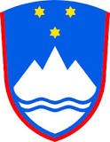
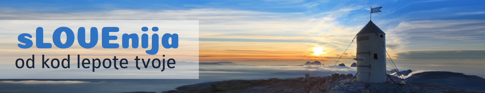

|  |  | ||
| Domov | Zgodovina | Znamenita dejstva | |
| Glavno mesto: Ljubljana |
Slovenija, uradno Republika Slovenija, je evropska država z zemljepisno lego na skrajnem severu Sredozemlja in na skrajnem jugu Srednje Evrope. Slovenija meji na zahodu z Italijo, na severu z Avstrijo, na severovzhodu z Madžarsko in na vzhodu in jugu s Hrvaško. Leži na stičišču alpskega, sredozemskega, panonskega in dinarskega sveta. Površina 20.271 km² uvršča Slovenijo med srednje velike evropske države. Dolžina državne meje znaša 1.382 km, od tega je 921 km kopenske, 413 km rečne in 48 km morske meje. Slovenska obala Jadranskega morja je dolga 46,6 km. Glavno mesto je Ljubljana, ki je gospodarsko, kulturno in politično središče, najvišji vrh pa je Triglav (2864 m). Skozi slovensko zgodovino so pomembni kulturni vplivi prihajali iz srednjeevropskega in apeninskega kulturnega prostora. Glede na popis iz leta 2011 ima Slovenija 2.050.189 prebivalcev. Slovenci predstavljajo 83 % državljanov, medtem ko so največji delež z ustavo predpisanih narodnih manjšin Madžari (0,32 %), Italijani (0,11 %) in Romi (0,17 %). Uradni in državni jezik v Sloveniji je slovenščina, na predelih, kjer sta strnjeno naseljeni italijanska oziroma madžarska narodna manjšina, sta uradna jezika tudi italijanščina oziroma madžarščina. Slovenija ima gospodarsko ureditev, ki temelji na prostem trgu. Slovenija je svojo državnost utemeljila s plebiscitom o samostojnosti 23. decembra 1990 in jo ubranila z osamosvojitveno vojno, potem ko je 25. junija 1991 razglasila neodvisnost. Po politični ureditvi je Slovenija parlamentarna demokracija. Med članice Organizacije združenih narodov je bila sprejeta 22. maja 1992. Slovenija je članica Sveta Evrope, Svetovne trgovinske organizacije, Organizacije za varnost in sodelovanje v Evropi, zveze NATO ter drugih svetovnih organizacij. Leta 2004 je pristopila v Evropsko unijo. Leta 2007 je Slovenija postala članica monetarne unije in prevzela skupno evropsko valuto evro. |
||
|
Prebivalstvo: okoli 2m ljudi |
|||
| Mario Savic © 2021 | Vse pravice pridržane. | ||